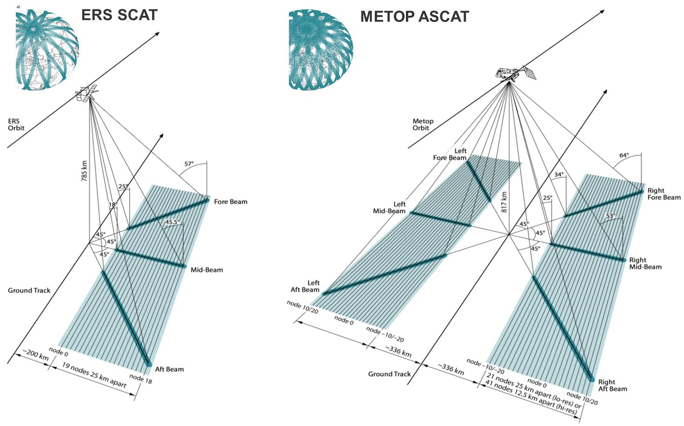
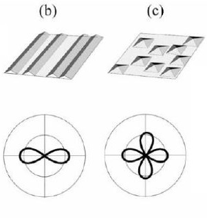

Soil Moisture
Lecture 3: Azimuth Normalisation

Funded by:


European C-Band Scatterometer
ERS Scatterometers
- λ=5.7 cm / 5.3 GHz
- VV Polarization
- Resolution: (25) / 50 km
- Daily global coverage: 41%
- Multi-incidence: 18-59°
- 3 Antennas
- Data availability
- ERS-1: 1991-2000
- ERS-2: 1995-2011
METOP ASCAT
- λ=5.7 cm / 5.3 GHz
- VV Polarization
- Resolution: 25 / 50 km
- Daily global coverage: 82%
- Multi-incidence: 25-65°
- 6 Antennas
- Data availability
- At least 15 years
- METOP-A: since 2006
Instrument Geometry
Source: PPP 1 MRS #64
Observed vs. expected backscatter
The observed backscatter can deviate from the expected theoretical backscatter because of the topography of the Earth's surface.
Topographical mechanisms modulating the backscatter w.r.t. the azimuth angle are:
Scatterometer viewing geometry
Incidence angle θ vs. local incidence angle θL:
Source: SCIRoCCo Handbook p13
Although the σ0 measurement is recorded at the nominal incidence angle θ, the angle determining the backscatter is actually the local incidence angle θL because of the local slope of the surface.
Topographic complexity
- Global elevation data 30 arc-seconds GTOPO30 (USGS)
- Standard deviation of elevation normalized between 0 and 100
Source: PPP2 SM Retrieval
Sloping Surface Backscattering Targets with Predominant Slope Orientation
- size of the sloping targets ≥ footprint size (Fig. a)
- e.g. mountain ranges, marginal areas of the Antarctic or Greenlandic ice sheets
- 25/50 km spatial resolution: most places in the world have slope values very close to zero! (however, the standard deviation may be high)
- footprint > size of sloping targets > λ (Fig. b, c)
- backscatter is amplified if the satellite is facing the slopes
- e.g. aligned crop fields, sand dunes

Polar plots of backscatter coeff. σ0 versus azimuth angle φ; Source: SCIRoCCO Handbook
Corner Reflectors with Predominant Orientation
- aligned scattering targets with very steep local slopes (Fig. d)
possibility of double or multiple "bounce" interaction
backscatter in certain viewing directions from a few point-like targets becomes so high that it can affect the backscatter response over the entire footprint!
e.g. urban areas laid out along a rectangular grid
Polar plots of backscatter coeff. σ0 versus azimuth angle φ
Source: SCIRoCCO Handbook
Resonant Bragg Scattering
size of the sloping targets ≈ footprint size
backscattered waves are subject to constructive interference at certain incidence angles
e.g. reflections from surface ripples on sand dunes
Fore- and aft-beam backscatter I
Source: PPP 1 MRS #64
Fore- and aft-beam backscatter II
Mean of the differences between fore- and aft-beam taken for ascending overpass (top) and descending overpass (bottom)
[from Bartalis (2009)]
Azimuthal Anisotropy I
method developed by Bartalis et al. (2006)
statistically expected backscatter value of a target is derived from historically recorded data
azimuthal anisotropy can vary depending on the incidence angle and with the season of the years
⇒ number of possible azimuth-incidence combinations:
6 azimuth directions ∗ 19 incidence angles = 114 possible combinations
Azimuthal Anisotropy II
Enough data must be available
δ = expected backscatter - measured backscatter
backscatter measurements can be normalized by adding/subtracting the bias δ
Including seasonal changes: 114 ∗ n azimuth-incidence-time combinations (n...number of chosen periods)
Azimuthal Anisotropy III
second order polynomial fitted to the backscatter versus incidence angle relationship, separately for each of the six azimuth angles
polynomial irrespective of azimuth fitted to all measurements, respresenting the expected backscatter of a target as a function of the incidence angle
⇒ the required azimuthal normalisation biases can be calculated at any incidence angle as the difference between each of the six azimuth polynomials and the seventh, cumulative polynomial